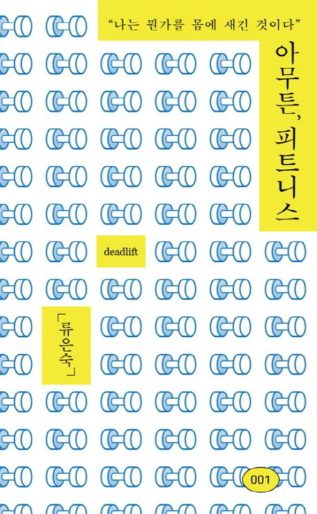

게다가, 그렇다, 나는 '독학' 스타일이다. 학교 다닐 때 공부도 수업 시간에 선생님 말을 들으며 한 적이 없다. 수업 시간 내내 이런저런 공상에 빠져 지내다가 시험 전날 독학하는 게 내 공부 스타일이다. 한마디로 나는 남의 말 듣는 걸 아주 싫어한다. 그런 내가 올 것이 왔다고 느꼈다는 건 내 스타일, 독학 스타일을 버려야 할 바로 그 순간이 왔음을 직감했다는 거다. - p.11
머리 쓰는 시간은 귀하게 여기고 몸 쓰는 시간은 하찮게 여기는 건 내가 받아온 교육과 사회체계가 가르친 고약한 습성이란 것을, 역시 머리로만 인정하면서 현실에서 여간해선 고치고 싶지 않았다. - p.29
나는 운동신경이 아주 둔한 사람이라 할 줄 아는 운동이라곤 하나도 없다. 미련할 정도로 꾸준히 버티는 건 잘한다. 느리더라도 자기 속도로 자기가 할 수 있는 만큼 묵묵히 갈 수 있다는 데 피트니스의 매력이 있다. - p.81
"어리석은 자가 그 어리석음을 고집하다 보면 현명해진다"는 윌리엄 블레이크의 시구처럼 말이다. - p.81
"나는 선천적으로 재능이 부족했지만 연습과 노력으로 이를 극복할 수 있었다. 나는 이것을 내가 하는 모든 일에 적용했다." - p.115
| 저자 | 류은숙 | 옮김 | |
| 출판 | 코난북스 | 발행 | 2017.09.25 |